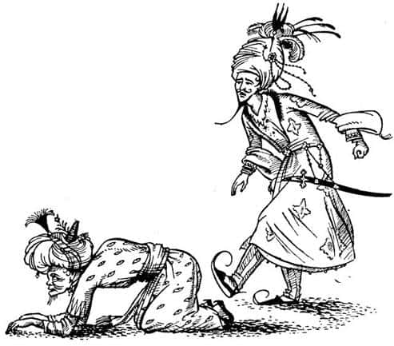
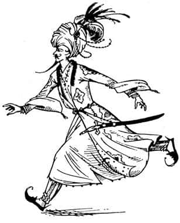
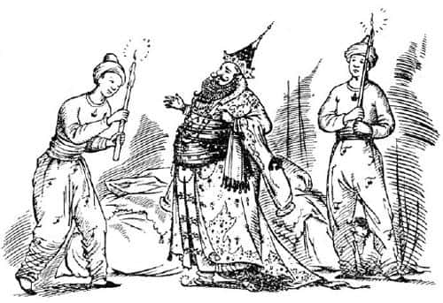

Tisroc’un Evinde
“Oh-babacığım-ve-gözlerimin-nuru” diye söze başladı genç adam; sözcükleri, sanki Tisroc hiç de gözlerinin nuru değilmiş gibi, hızla ve asık suratla mırıldanmıştı. “Ömrün uzun olsun, ama beni perişan ettin. Gündoğumunda, kahrolası barbarların gemisinin gittiğini görür görmez bana en hızlı kadırgalarından birini verseydin, belki onları yakalayabilirdim. Fakat sen beni, önce burnun ardında daha iyi bir demirleme yerine gidip gitmediklerini öğrenmek için adam göndermeye ikna ettin. Ve şimdi bütün gün boşa gitti; onlar kaçtı – kaçtılar – elimden! Sahte yeşim ve—” Kraliçe Susan hakkında, burada yazarsam hiç de yakışık almayacak birçok söz eden bu genç adam, kuşkusuz Prens Rabadash’tı. Sahte yeşim dediği de Narnialı Susan’dı.
“Sakin ol oğlum” dedi Tisroc. “Çünkü misafirlerin gidişi sağduyulu ev sahibinin kalbinde kolaylıkla iyileşecek bir yara açar.”
“Fakat ben onu istiyorum” diye bağırdı Prens. “Ona sahip olmalıyım. Onu almazsam ölürüm – bir köpeğin gururlu, yalancı, yüreği karanlık kızı olsa bile! Uyuyamıyorum, yemeklerin hiç tadı yok ve onun güzelliğinden gözlerim kararıyor. Barbar Kraliçe’ye sahip olmalıyım.”
“Şu sözler yetenekli bir şair tarafından söylenmiş…” dedi Vezir yüzünü (toz içindeki) halıdan kaldırarak, “Aklıselim çeşmesinden içilen bu büyük yudumlar, gençlik aşkının ateşini söndürmek içindir.”
Bu, Prens’i çileden çıkarmaya yetti. “Köpek” diye bağırdı Vezir’in kıçına hedefini bulan bir sürü tekme atarak, “bana şairlerden alıntı yapmaya nasıl cesaret edersin? Bütün gün vecizeler ve beyitler fırlatıldı önüme; artık dayanamıyorum.” Sanırım Aravis, o anda Vezir’e hiç acımadı.

Tisroc düşünceye dalmış gibi görünüyordu, ancak uzun bir duraklamanın ardından, olanları görünce, sükunetle:
“Oğlum, her ne sebeple olursa olsun saygıdeğer ve aydın bir veziri tekmelememelisin” dedi, “çünkü pahalı bir mücevher, bir gübre yığınının içinde olsa bile nasıl değerini korursa, kullarımızın en değersizlerinin de yaşlılık ve bilgeliklerine saygı duyulmalıdır. Onun için vazgeç bundan ve bize ne istediğini ve niyetini söyle.”
“Benim isteğim ve niyetim, ey babacığım” dedi Rabadash, “yenilmez ordularını vakit geçirmeden toplaman ve üç kez lanetlenmiş Narnia topraklarını işgal edip kılıç ve ateşle yok ederek, sınırsız imparatorluğuna katman. Ulu Kralları ve Kraliçe Susan dışında onun kanından olan herkesi öldürmelisin. Çünkü o, benim karım olacak, ama önce güzel bir ders almalı.”
“Şunu kafana sok ey oğlum” dedi Tisroc, “söylediklerinin hiçbirisi benim Narnia’ya savaş açmama neden olamaz.”
“Eğer babam olmasaydın, ey ölümsüz Tisroc” dedi Prens dişlerini gıcırdatarak, “bunlar bir korkağın sözleri derdim.”
“Ve sen benim oğlum olmasaydın, ey ateşli Rabadash” diye cevapladı babası “bu sözleri ettiğin için yaşamın kısa, ölümün yavaş olurdu.” (Konuşmasındaki sakin ve soğuk ses tonu Aravis’in kanını dondurdu.)
“O halde neden, ey babacığım” dedi Prens – bu kez daha saygılı bir sesle, “neden Narnia’yı cezalandırma konusunda, aylak bir köleyi asmaktan ya da bir yılkı atını köpeklere yem olmak üzere göndermekten daha fazla düşünelim? Narnia, senin en küçük eyaletlerinden birinin dörtte biri kadar büyüklükte bile değil. Bin ok, orayı beş haftada fethedebilir. Orası, imparatorluğunun eteklerinde çirkin bir leke.”
“Buna kuşku yok” dedi Tisroc. “Kendilerine özgür diyen bu küçük barbar ülkeler” (sanırım, aylak, düzensiz ve verimsiz demek istiyordu!) “Tanrılardan ve akıllı insanlardan nefret ederler.”
“O zaman, neden bunca yıl Narnia gibi bir ülkenin bize boyun eğmeden yaşamasına izin verdik?”
“Şunu bil ki ey bilge Prens” dedi Başvezir, “haşmetli babanın hiç bitmeyecek hayırlı saltanatının başladığı yıla kadar, Narnia toprakları kar ve buzla kaplıydı; dahası, çok güçlü bir büyücü tarafından yönetiliyordu.”
“Bunu çok iyi biliyorum, ey geveze Vezir” diye cevapladı Prens. “Fakat büyücünün öldüğünü de biliyorum. Kar ve buzlar eridi. Şimdi Narnia sakin, hoş ve verimli bir yer.”
“Şuna kuşku yok ki ey bilgili Prens, bu değişiklikler, şimdi kendilerini Narnia’nın Kral ve Kraliçeleri diye adlandıran o şeytani kişilerin güçlü efsunlarıyla yapıldı.”
“Ben bunun daha çok” dedi Rabadash, “yıldızların değişimi ve doğa kanunları sayesinde gerçekleştiğine inanıyorum.”
“Tüm bunlar” dedi Tisroc, “bilge insanların tartışmaları. Ben bu kadar büyük bir değişimin ve yaşlı büyücünün öldürülmesinin, güçlü bir büyünün yardımı olmadan yapılabileceğine asla inanmayacağım. Çoğunlukla insan gibi konuşan hayvan şeklindeki şeytanların ve yarı insan yarı hayvan canavarların yaşadığı o ülkede, böyle şeyler olabilir. Narnia’nın Ulu Kralının (umarım Tanrılar bütünüyle reddeder) Aslan şekline bürünmüş, korkunç görünüşlü, çok güçlü ve çok kötü bir ruh tarafından korunduğu, sık sık kulağımıza geliyor. Bu nedenle Narnia’ya saldırmak, sonunun ne olacağı belirsiz bir girişimdir. Ayrıca ben, elimi çekebileceğimden daha ileriye uzatmam.”
“Calormen o kadar kutsanmış ki” dedi Vezir yine yüzünü kaldırarak, “Tanrılar oranın yöneticisine seve seve sağduyuyu ve dikkatliliği ihsan etmişler! Ama zeki ve karşı koyulamaz Tisroc’un söylediği gibi, Narnia kadar lezzetli bir tabaktan ellerimizi çekmeye zorlanmamız çok üzücü. Şunu söyleyen şair yetenekli bir—” fakat o anda Ahoshta, Prens’in ayak parmaklarının sabırsızca hareket etmekte olduğunu gördü ve aniden sustu.
“Bu çok üzücü” dedi Tisroc, derin ve sakin sesiyle. “Her sabah güneş gözlerimde kararıyor ve her gece uykum daha da az dinlendirici, çünkü Narnia hâlâ özgür.”
“Ey babacığım” dedi Rabadash. “sana Narnia’yı fethetmen için elini uzatabileceğin, ama girişim başarısız olursa zararsız bir biçimde geri çekebileceğin bir yol göstermemi ister misin?”
“Eğer bunu gösterebilirsen, ey Rabadash,” dedi Tisroc, “sen oğullarımın en iyisi olursun.”
“Dinle öyleyse, ey babacığım. Bu gece, hemen yanıma iki yüz atlı alıp çölü geçeceğim. Ve bütün herkes benim, senden habersiz gittiğimi sanacak. İkinci sabah ben, Archenland’da, Kral Lune’a ait Anvard Kalesi’nin kapılarında olurum. Bizimle barış içindeler ve hazırlıksızlar. Onlar yerlerinden kıpırdamadan Anvard’ı alırım. Sonra Anvard üzerindeki geçidi aşıp, Narnia’yı da geçerek Cair Paravel’e gideceğim. Ulu Kral orada olmayacak çünkü ben oradan ayrılırken kuzey sınırlarındaki devlere karşı sefere çıkmaya hazırlanıyordu. Büyük bir olasılıkla, Cair Paravel’in kapılarını açık bulacağım ve içeriye gireceğim. Sağduyulu ve insaflı davranacağım; mümkün olduğu kadar az Narnialı kanı akıtacağım. Ondan sonra, geriye sadece Kraliçe Susan’la Splendor Hyaline’ın gelişini beklemek, karaya ayak basar basmaz kaçak kuşu yakalamak ve onu terkime atıp Anvard’a dönmek kalıyor.”
“İyi de, ey oğlum” dedi Tisroc, “Kadını kaçırırken, sen ya da Kral Edmund, ölürse ne olacak?”
“Az adamları var” dedi Rabadash. “Onun kanını almak için duyduğum şiddetli arzumu dizginleyeceğim. On adamımı, silahlarını alıp onu bağlamakla görevlendireceğim. Böylece, seninle Ulu Kral arasında ölümcül bir savaş nedeni olmayacak.”
“Ya Splendor Hyaline Cair Paravel’e senden önce ulaşırsa?”
“Bu rüzgârla mümkün değil ey babacığım.”
“Son bir soru daha, ey benim becerikli oğlum” dedi Tisroc: “Barbar kadına nasıl sahip olacağını açıkça anlattın. Peki benim Narnia’yı fethetmeme nasıl yardım edeceksin?”
“Ey babacığım, ben ve atlılarım Narnia’ya yaydan çıkmış bir ok gibi girip çıkmamıza karşın, Anvard’a sonsuza kadar sahip olacağımız gözünden kaçtı mı? Ve Anvard’ı elinde tutuyorsan, Narnia kapılarında oturuyorsun demektir. Anvard’daki birlik yeterli sayıya ulaşıncaya kadar yavaş yavaş artırılabilir.”
“Zekice ve ileri görüşlülükle edilmiş sözler bunlar. Ancak işler yolunda gitmezse ben elimi nasıl geri çekeceğim?”
“Senin bilgin dışında ve sana karşı gelerek, gençliğimin heyecanı ve güçlü aşkımın beni buna zorladığını söylersin.”
“Ya o zaman Ulu Kral, kız kardeşi barbar kadını geri göndermemizi isterse?”
“Ey babacığım, emin ol ki istemez. Bir kadın kapris yapıp bu evliliği reddetse de, Ulu Kral Peter sağduyulu ve anlayışlı bir adamdır. O, hiçbir şekilde, biz evlendik diye dayanışmanın yararlarını ve saygıdeğerliğini gözden kaçırmak istemez; yeğenlerini ve onların oğullarını Calormen tahtında görmek isteyecektir.”
“Eğer ben, senin de arzuladığın gibi, sonsuza kadar yaşarsam bunu göremeyecek” dedi Tisroc, eskisinden daha da kuru bir sesle.
“Ve ey babacığım ve de ey gözlerimin nuru” dedi Prens bir anlık tuhaf bir sessizlikten sonra: “Sanki Kraliçe yazmış gibi, beni sevdiğini ve Narnia’ya dönmek istemediğini belirten mektuplar göndeririz. Çünkü kadınların bir rüzgârgülü kadar çabuk değiştikleri iyi bilinir. Mektuplara inanmasalar bile, onu almak için silahlı olarak Tashbaan’a gelmeye cesaret edemezler.”
“Ey bilge Vezir” dedi Tisroc, “bu ilginç teklif hakkındaki bilgece sözlerini bize lütfet.”
“Ey ölümsüz Tisroc” diye cevapladı Ahoshta, “baba sevgisinin gücü tarafımdan bilinmiyor değil ve oğulların, babalarının gözünde yakuttan daha değerli olduğunu sık sık işitmişimdir. Bu durumda, asil Prens’in yaşamını tehlikeye atacak bir konu hakkında, aklımdakini serbestçe açıklamaya nasıl cesaret edebilirim ki?”
“Edeceksin kuşkusuz” diye cevapladı Tisroc. “Çünkü etmemenin tehlikesinin, en azından etmeninki kadar büyük olduğunu öğrenirsin!”

“Duymak, itaat etmektir” diye inledi perişan adam. “O halde bil ki ey akıllıların akıllısı Tisroc, ilk olarak, Prens’in atıldığı tehlike sanıldığı kadar büyük değil. Çünkü Tanrılar barbarlara bilgelik ışığını ihsan etmemiştir. Yani onların şiirlerinde bizimki gibi özdeyişler ve yararlı öğütler pek yoktur, sürekli savaş ve aşktan söz edilir. Bu nedenle hiçbir şey onlara, böylesine çılgınca bir girişim kadar soylu ve takdire değer görünmeyecektir – of!” Çünkü Prens “çılgınca” dediğinde onu tekmelemişti yine.
“Vazgeç ey oğlum” dedi Tisroc. “Ve sen saygıdeğer Vezir, o vazgeçse de vazgeçmese de, asla o güzel sözleri etmekten çekinme. Çünkü basit zorluklar karşısında doğru bildiğinden şaşmamak, terbiyeli ve ciddi bir insana yakışan yegâne şeydir.”
“Duymak, itaat etmektir” dedi Vezir, kıçını Rabadash’ın ayağından uzaklaştırmak için birazcık kıvırtarak. “Saygıdeğer olmasa bile, onlara göre hiçbir şey, bu tehlikeli – şey – girişim kadar affedilebilir değildir; hele bir kadının aşkı için yapılmışsa… Bu nedenle Prens kazara onların eline düşerse, öldürmezler. Hayır. Hatta kaçırmayı başaramasa bile, cesareti ve aşkının büyüklüğüyle Kraliçe’nin kalbini kazanabilir.”
“Bu iyi bir tespit, yaşlı geveze” dedi Rabadash. “Çok iyi. O çirkin kafana nasıl geldiyse…”
“Efendilerimin övgüsü gözlerimin ışığıdır” dedi Ahoshta. “İkincisi de, ey saltanatı sonsuz olması gereken ve olacak olan Tisroc. Sanırım Tanrıların yardımıyla Anvard’ın Prens’in eline geçmesi muhtemeldir. Eğer öyle olursa Narnia’yı gırtlağından yakalamışız demektir.”
Uzun bir suskunluk oldu. Oda öylesine sessizdi ki, kızlar nefes almaya bile cesaret edemiyorlardı. Sonunda Tisroc konuştu:
“Git oğlum” dedi. “Ve söylediklerini yap. Fakat benden ne onay bekle ne de yardım. Öldürülürsen intikam almayacağım. Barbarlar seni hapse atarsa kurtarmayacağım. Ve başarsan da başarmasan da, gerektiğinden bir damla bile fazla soylu Narnialı kanı dökersen ve bunun yüzünden savaş çıkarsa, bir daha asla sana iyi davranmayacağım ve senden sonra gelen kardeşin, Calormen’de senin yerini alacak. Şimdi git. Acele et, kimse bilmesin ve şansın bol olsun. Merhametsiz ve dayanılmaz Tash, kılıcına ve mızrağına güç versin.”
“Duymak, itaat etmektir” diye bağırdı Rabadash ve aceleyle babasının ellerini öpmek için eğildikten sonra, koşarak odadan dışarı çıktı. Tisroc ve Vezir’in geride kalması, şimdi vücuduna kötü bir şekilde kramplar giren Aravis’i büyük bir hayal kırıklığına uğratmıştı.
“Ey Vezir” dedi Tisroc, “Bu gece burada toplandığımızı, üçümüzden başka kimsenin bilmediğine emin misin?”
“Ey efendim” dedi Ahoshta, “kimsenin bilmesi mümkün değil. Zaten bu nedenle ben, sahiplerinin gelmesi için hiçbir sebep olmayan ve asla toplantı yapılmayan bu eski sarayda bir araya gelmemizi teklif ettim. Ve siz, yanılmaz zekânızla kabul ettiniz.”
“Güzel” dedi Tisroc. “Eğer biri bilseydi, bir saate varmadan leşini sererdim. Şimdi, ey akıllı Vezir, sen de unut bunu. Sen ve ben, Prens’in planlarına ait tüm bilgileri kafamızdan silelim. Prens benim bilgim ve onayım olmadan gitti. Şiddete düşkün, sabırsız, genç ve isyankâr eğilimli olduğu için, nereye gittiğinden de haberim yok. Anvard’ın onun eline geçtiğini duyduğumuzda, hiç kimse sen ve benden daha fazla şaşırmayacak.”
“Duymak, itaat etmektir” dedi Ahoshta.
“İşte bu yüzden, ilk oğlunun ölümüne neden olabilecek böylesi bir işe koşturan katı yürekli bir baba olduğumu, aklına bile getirmeyeceksin; Prens’i sevmeyen senin gibi biri için hoşnut edici olsa bile. Çünkü aklının derinliklerini görebiliyorum.”
“Ey kusursuz Tisroc” dedi Vezir. “Ne Prens’i, ne kendi hayatımı, ne ekmeği, ne suyu ne de güneş ışıklarını size olan sevgimle kıyaslayabilirim.”
“Duyguların asil ve doğru. Ben de bunların hiçbirini saltanatımın gücü ve ihtişamıyla kıyaslayacak kadar sevmiyorum. Prens başarılı olursa, Archenland bizim olur. Sonra da belki Narnia… Başaramazsa – on sekiz oğlum daha var ve Rabadash, kralların en büyük oğullarında görüldüğü üzere, tehlikeli olmaya başlıyor. Tashbaan’da en az beş Tisroc, en büyük oğullarının, bilge prenslerin, tahta geçmeyi beklemekten bıkması yüzünden canından oldu. Burada hareketsizlikten kanı kaynayacağına, dışarıda serinlemesi daha iyi. Ve şimdi ey benim kusursuz vezirim. Babalık çok zor. Kaygılanıyorum. Ve şimdi uyumak istiyorum. Müzisyenleri odama gönder. Ama yatmadan önce, üçüncü aşçı için verdiğimiz af kararını iptal et. İçimde hazımsızlık alametleri hissediyorum.”
“Duymak, itaat etmektir” dedi Başvezir. Dört ayak vaziyetinde kapıya doğru geriledi, ayağa kalktı, eğilerek selam verdi ve dışarı çıktı. O gittikten sonra da Tisroc, sedirde sessizce oturmaya devam etti. Aravis, onun uyuyakaldığından neredeyse korkmaya başlamıştı. Fakat sonunda eklemlerinin çıtırtısı ve derin bir iç çekişle, kocaman gövdesini güçlükle kaldırdı; kölelere, ışıkla kendisine yol göstermeleri için işaret etti ve dışarıya çıktı. Kapı arkasından kapandı. Oda bir kez daha karanlığa gömüldü; kızlar yeniden rahatça nefes almaya başladılar.
